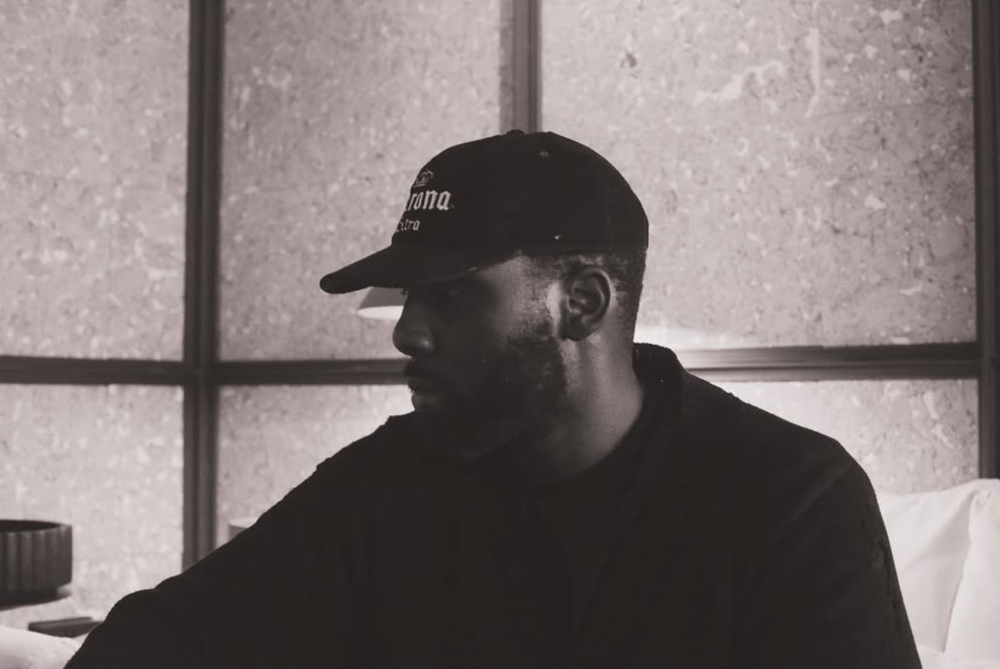
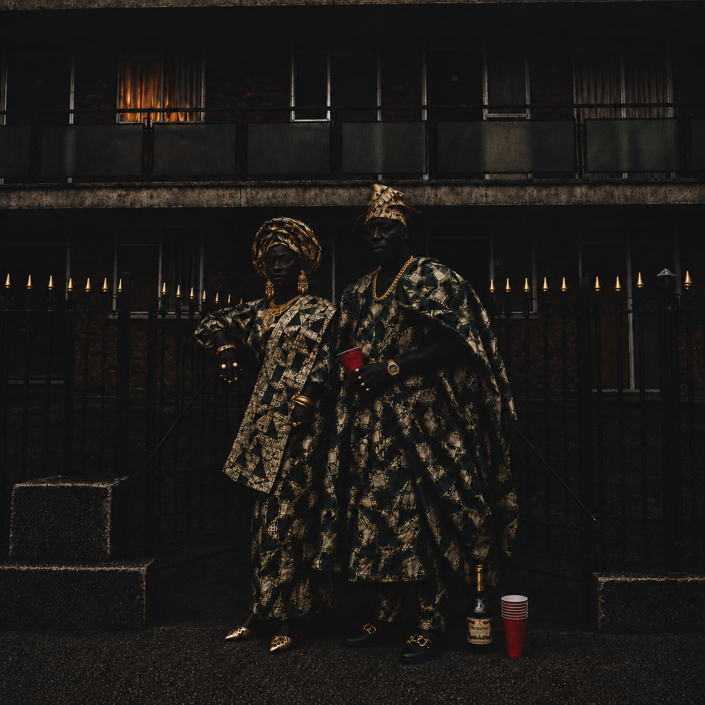
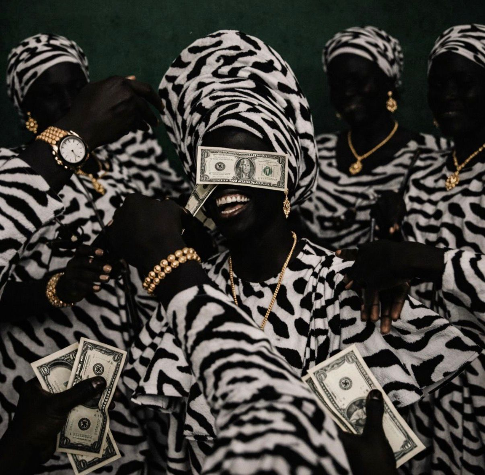

A single, intimate evening at Soho House Amsterdam marking Nigerian Independence Day through the story and practice of one artist. Chic, Afrocentric and creative: a conversation first, a celebration second, and both done with restraint.
| Event | Fola Adeleke: Made of Many Places — An Evening for Nigerian Independence |
| Occasion | Nigerian Independence Day, 1 October (independence from Britain, 1960) |
| Venue | Soho House Amsterdam, members' club. Preferred space: a room that can hold c. 100 with a lounge/salon layout and a DJ position Space TBC |
| Date & time | Thursday 1 October 2026, 19:00 – 23:00 (doors 19:00, talk 20:00). Alternative: Friday 2 October TBC |
| Capacity | 100 guests, invitation only. Mixed list: Soho House members, Fola's community and collectors, Amsterdam creative industry, press |
| Format | Welcome drinks → moderated Q&A (40 min) with audience questions → drinks, canapés and DJ set to close |
| Speaker | Fola Adeleke, artist and Lead Designer at Daily Paper. Moderator TBC |
| Food & drink | Welcome cocktail, bar service, passed canapés with Nigerian-inspired items (see §06) |
| Music | DJ, two sets: ambient Afro-soul/highlife on arrival, Afrobeats-led set after the talk (see §07) |
| Feel | Chic · Intimate · Afrocentric · Creative |
| Organiser contact | Studio Fola Adeleke — hello@folaadeleke.com — folaadeleke.com |
Items marked TBC are proposals for the Soho House events team to confirm or counter. Everything else is the organiser's brief.
Nigerian Independence Day is usually marked with scale: flags, parades, big rooms. This evening does the opposite. It celebrates the country through one person's story, told slowly, to a hundred people who are close enough to ask a question.
On 1 October 1960 Nigeria became independent. Sixty-six years on, a generation of Nigerians raised abroad is shaping culture in London, Amsterdam, New York and Lagos at once. Fola Adeleke is one of them: born to Nigerian parents, raised in East London, now leading design at Daily Paper in Amsterdam and making artwork about the family, ceremony and memory that travelled with him.
The evening uses his experience as a lens. What does it mean to be Black, British and Nigerian? How does heritage show up in a fashion campaign, a print, a typeface, a colour choice? What does a Nigerian living room in Hackney have to say to a design studio in Amsterdam? These are the questions the Q&A will work through.
A candid, well-moderated Q&A is the centre of the night. Everything else supports it. If the talk lands, the evening lands.
Independence is a joyful thing. After the talk the room should loosen: music up, drinks flowing, people meeting. Nigerian, but for everyone in the room.
Fola is a designer. Details will be noticed: the typeface on the invitation, the lighting on the prints, the order of the canapés. Keep everything considered and restrained.
Approved copy for the Soho House listing, member app, invitations and social. Please use verbatim or send edits back for sign-off. The long version is for the event page; the short version for the app card, email subject lines and Instagram; the one-liner for the run-of-show and signage.
To mark Nigerian Independence Day, Soho House Amsterdam hosts an intimate evening with artist and designer Fola Adeleke.
Nigerian-British, raised in East London and now based between Amsterdam and London, Fola is Lead Designer at Daily Paper and a mixed media artist whose limited-edition prints explore identity, family and cultural memory. His work sits at the meeting point of African heritage and city life, layering texture, portraiture and contemporary visual storytelling.
In a candid Q&A, Fola will talk through the experiences that shaped him: growing up between two cultures, building a career in fashion and design, and how being Black, British and Nigerian informs the way he sees, makes and designs. Expect an honest conversation about heritage, craft and the creative freedom that comes from belonging to more than one place.
The evening is limited to 100 invited guests. Drinks and canapés will be served, with a DJ set moving from Afrobeats and highlife to the wider sounds of the diaspora.
Chic, intimate and unapologetically Afrocentric, this is a celebration of Nigerian independence through the lens of one of its diaspora's most distinctive creative voices.
An intimate evening celebrating Nigerian Independence Day with Nigerian-British artist and Daily Paper Lead Designer Fola Adeleke. In a candid Q&A, Fola reflects on growing up between cultures, his path through fashion and design, and how heritage shapes his art and practice. 100 invited guests, drinks, canapés and a DJ spanning Afrobeats, highlife and the sounds of the diaspora. Chic, Afrocentric and creative.
Fola Adeleke in conversation: an evening for Nigerian Independence Day.

Fola Adeleke is a Nigerian-British mixed media digital artist and designer raised in East London, whose work explores identity, culture and emotional memory through layered contemporary visual storytelling. Influenced by the intersection of African heritage and urban life, his practice blends texture, symbolism, portraiture and graphic composition to create works that feel both deeply personal and culturally expansive.
Adeleke is the Lead Designer at Daily Paper, where his visual language has been shaped by fashion, architecture, music and contemporary African creativity. Now based between Amsterdam and London, his work carries a strong sense of rhythm, design sensitivity and modern cultural dialogue.
His limited-edition prints are released in small drops through folaadeleke.com, each supplied with a certificate of authenticity.


Timings are proposed for a 19:00 start and a 23:00 close and can flex to Soho House's house rules. The one fixed point is the talk: it must start within 15 minutes of the published time so members can plan around it.
| Time | Segment | Detail |
|---|---|---|
| 15:00 – 18:30 | Build and setup | Artwork hung or placed on easels; DJ and PA sound-checked; seating laid out; lighting set and walked with the studio. Fola and moderator run-through at 18:00 (20 min, in the room). |
| 18:45 | Staff briefing | Door team has the guest list and plus-one rules. Floor team briefed on canapé descriptions and the two moments the room must go quiet (talk start, closing toast). |
| 19:00 – 20:00 | Arrival and welcome drinks | Doors open. Welcome cocktail handed at entry. DJ set one: Afro-soul, highlife, jazz at conversation level. Guests view the prints. Photographer working the room. |
| 19:55 | Call to seats | Music fades over two minutes. Host or moderator invites guests to sit. Bar stays open, service pauses for the talk. |
| 20:00 – 20:05 | Welcome | Soho House host welcomes the room (1 min), hands to moderator. Moderator frames the evening and Nigerian Independence Day (3 min) and introduces Fola. |
| 20:05 – 20:35 | In conversation | Moderated Q&A, 30 minutes. Four to five themes (see §04). Two or three of Fola's works referenced on screen or in the room. |
| 20:35 – 20:50 | Audience questions | 15 minutes, roaming mic. Moderator holds one planted question in reserve to open if needed. |
| 20:50 – 20:55 | Close and toast | Moderator closes. Fola thanks the room. A short toast to Nigeria at 66. DJ set two starts on the applause. |
| 20:55 – 22:45 | Reception | Canapé service resumes in full. DJ set two: Afrobeats-led, building through the night. Fola available in the room; informal print enquiries handled by the studio. |
| 22:45 | Last call | DJ eases down. Bar last orders per house policy. |
| 23:00 | Close | Guests depart. Artwork packed by the studio. Derig complete by 00:00 TBC. |
A direction rather than a menu. Soho House's kitchen and bar to propose within it. The principle: Nigerian flavour, Soho House execution. Nothing served in a takeaway box, nothing labelled "fusion".
Eight to ten passed items over the evening, roughly 8 pieces per guest, weighted towards the reception after the talk. Suggested references for the kitchen:
Dietary: at least three vegan items and one gluten-free item on rotation. Allergen cards at the bar. Halal meat preferred TBC.
Music carries the Afrocentric brief more than anything else in the room. Two sets, one DJ, a clear arc: from listening to dancing.
Warm, unhurried, at conversation level. Highlife, Afro-soul, jazz and the softer end of contemporary Afrobeats. Reference points: Ebo Taylor, Tony Allen, Fela's slower side, Asa, Tems, Cleo Sol, Sault, Obongjayar. Guests should notice the music without having to raise their voices.
Starts on the applause and builds. Afrobeats-led with room for amapiano, highlife classics and diaspora crossover. Reference points: Burna Boy, Wizkid, Asake, Rema, Ayra Starr, Davido, King Sunny Adé, Fela, and the UK-Nigerian sound (Skepta, J Hus, Odumodublvck). Peak around 22:00, then ease down. Nigerian, but built so the whole room can move.
Chic. Intimate. Afrocentric. Creative. Four words, and the fourth is what keeps the first three honest. Nothing themed, nothing hired in from a party supplier. The room should look like Soho House on its best night, with Fola's work as the only colour in it.
Six to eight limited-edition prints, framed, from the current and recent drops. Proposed selection to include Kingdom We Carry, Loud Celebration, Elders, Family Council, Mother of a Nation and Community; final list confirmed by the studio two weeks out.
What the studio needs from the space and the house team, and what the studio brings. Please mark anything the venue cannot provide and we will source it.
| Area | Requirement | Provided by |
|---|---|---|
| Space | Room for 100 with c. 60 soft seats in a salon layout, standing room, a clear talk area of at least 3 × 3 m, and a DJ position with power. Adjacent or in-room bar. Cloakroom. | Soho House |
| Furniture | Two armchairs and a low side table for the talk. Mixed seating from house stock. Two to three plinths or consoles for programmes and the entrance board. | Soho House |
| Audio | Speech PA with engineer for 19:45 – 21:00. 2 × lapel/headset, 2 × handheld radio mics. DJ system: 2 × CDJ-3000 or equivalent, DJM-900 or equivalent mixer, monitors, booth table. Desk audio feed (XLR or line) to camera. | Soho House TBC |
| Lighting | Dimmable house lighting, warm. Pin spots or adjustable track for 6–8 works. Candlelight where house policy allows. Two soft, warm lights on the talk area for camera. | Soho House / Studio |
| Visuals | Optional: one screen or projector, 16:9, HDMI, for a silent loop of works during the talk. Off or dark at all other times. | Soho House TBC |
| Artwork | 6–8 framed prints, easels if needed, wall labels, hanging kit. Delivered and installed 15:00 – 17:30, derigged 23:00 – 00:00. | Studio |
| Entrance title board, A5 programmes, wall labels, allergen cards (copy from kitchen). | Studio | |
| Florals | Two or three low arrangements: dark foliage, one white flower, a touch of green. No colour clashes with the prints. | Soho House TBC |
| Photography | Photographer and videographer, 18:30 – 23:00. Access to a small area for kit. | Studio |
| Front of house | Guest list check-in on tablet, two staff 18:45 – 21:00. Wristbands or stamps not required. Plus-ones only where named. | Soho House |
| Green room | A quiet space for Fola, moderator and DJ from 17:30, with water, tea and a mirror. | Soho House |
| Access | Load-in route, parking or drop-off for artwork van, lift dimensions if applicable. | Soho House to advise |
| Insurance & risk | Studio insures artwork in transit. Venue to confirm cover for artwork on site, or studio extends its policy. Standard event risk assessment shared by Soho House. | Both TBC |
100 confirmed guests, invitation only, with a waitlist. Over-invite by roughly 30% to land at 100 on the night. Proposed split, to be agreed:
| Soho House members | 40 — curated by the events / membership team: fashion, design, music, film, food |
| Fola's list | 35 — collectors, collaborators, Daily Paper colleagues, Nigerian and diaspora creative community in Amsterdam and London |
| Industry & partners | 15 — galleries, brands, cultural institutions, potential future collaborators |
| Press & talent | 10 — Dutch and UK culture press, photographers, a small number of talent |
Balance matters. A room that is one-third Nigerian, one-third wider Black diaspora and one-third everyone else will feel like the brief. A room that is any one of those alone will not.
| T-4 weeks | Save-the-date to Fola's list and priority members. Listing live in the Soho House app. |
| T-3 weeks | Full invitations out. Soho House social: one post, one story series. |
| T-2 weeks | Waitlist opens. Studio newsletter feature. Press invitations. |
| T-1 week | Final guest list locked. Moderator questions agreed. Menu and playlist signed off. |
| T-48 h | Reminder email. Final numbers to kitchen. |
| T+1 day | Thank-you note with three or four stills. |
| T+3 days | Full stills gallery. Soho House and studio recap posts. |
| T+10 days | Short film released across all channels. |
Who owns what, and who is in the room on the night. Everything here is a proposal for the Soho House team to adjust to how the House normally runs.
| Workstream | Soho House Amsterdam | Studio Fola Adeleke |
|---|---|---|
| Venue & date | Confirm space, date, hire terms and minimum spend | Confirm Fola's and moderator's availability |
| Programme | House host for the welcome; input on moderator | Moderator, questions, run-through, Fola |
| Food & drink | Menu proposal, bar, service, allergens | Direction, sign-off, tasting if offered |
| Music | DJ technical setup, PA, engineer | DJ booking, brief, fee |
| Artwork | Fixings, lighting, insurance position, load-in | Selection, framing, transport, install, derig |
| Design & print | Approve use of Soho House name and any marks | Invitation, programme, board, labels |
| Guest list | Member invitations, RSVP system, door | Studio, industry and press lists |
| Content | Filming policy, member consent, House channels | Photographer, videographer, edit, delivery |
| Budget | Venue, F&B, AV, staffing quote | Talent, DJ, content, print, artwork logistics |
Studio producer: Name / mobile
Soho House event manager: Name / mobile
To be exchanged at the site visit.
Option A — Member programming. Soho House hosts the evening as part of its cultural programme. Venue and core F&B covered against a minimum spend or programming budget; the studio covers talent, content and artwork logistics.
Option B — Private hire with partner. The studio (with Daily Paper or another partner) hires the space. Full control of the guest list and content; Soho House provides venue, F&B and AV at agreed rates.
The studio's preference is Option A with a small number of protected non-member invitations. Open to Soho House's view.
Studio Fola Adeleke · hello@folaadeleke.com · folaadeleke.com
For the Soho House Amsterdam events team · v1.0 · 19 September 2026